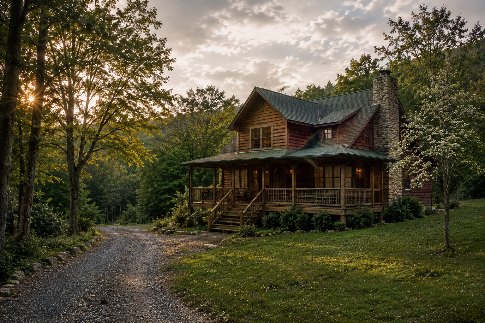
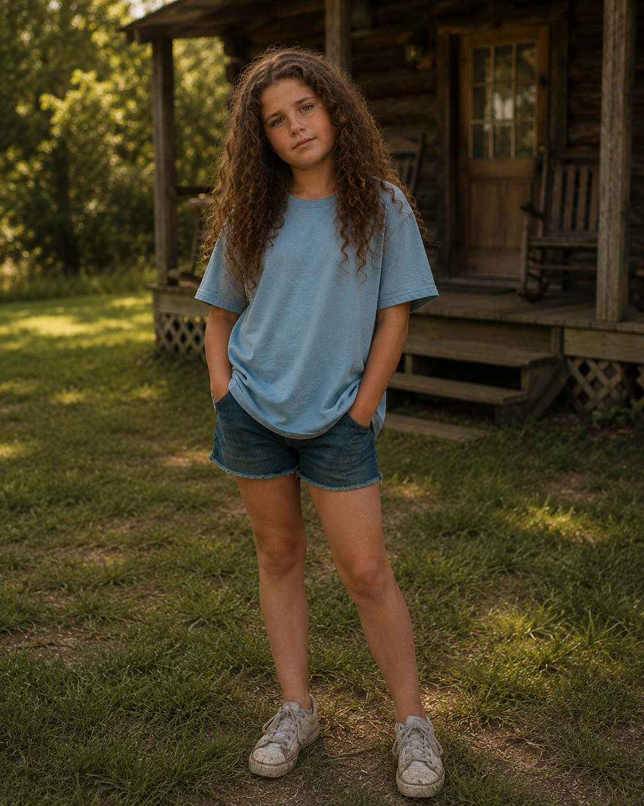

Family Patriarch
Aubrey Tucker
A devoted husband and father still haunted by the rain-slicked road that took his brother Dusty.
A Novel by Todd Thorne
A Family’s Reckoning
Because family isn’t the place where nothing goes wrong. It’s the place you come back to when it does.

The Story
For thirty-five years, Aubrey and Annie Tucker have built a life together, raising six children, weathering storms both literal and otherwise, and holding fast to a love that started with a boy, a girl, and a booth at Deano’s Pizza back in Greeneville, Tennessee. Now, to celebrate their anniversary, they’ve gathered the whole sprawling family, grown children, grandchildren, and every secret they’ve been carrying, for two weeks in a cabin deep in the Smoky Mountains.
It should be simple. Cards on the porch. Fudge from the outlet mall. The kind of noise that only a big, messy family can make.
But some ghosts don’t stay buried in the mountains. They live in the blood.
Aubrey has spent twenty-five years running from the rain-slicked road that took his brother Dusty, and the storms up here keep dragging him back to it. Annie is holding a secret of her own, one that could unravel everything she and Aubrey have built. Their children arrive carrying their own storms: a foreclosure notice hidden in a purse, a lie about a firing that isn’t the whole truth, a packed bag kept by the door in case things fall apart, a marriage gone quiet in all the wrong ways. And when a chaotic, addicted aunt comes crashing up the gravel drive uninvited, what’s left of the family’s careful calm goes with her.
Over fourteen days in the mountains, the Tucker family will fight, forgive, break, and rebuild, sometimes all in the same afternoon. Forgiveness Road is a story about what happens when everything you’ve hidden finally catches up with everyone you love, and about the long, imperfect, absolutely necessary walk back toward each other.
Because family isn’t the place where nothing goes wrong. It’s the place you come back to when it does.

The Tucker Family
A large family arrives carrying love, resentment, grief, secrets, and the hope that two weeks together might still change everything.
Family Patriarch
A devoted husband and father still haunted by the rain-slicked road that took his brother Dusty.
Family Matriarch
The steady heart of the family, carrying a secret that could test everything she and Aubrey have built.
The Lost Brother
Gone for twenty-five years, yet still present in Aubrey’s memories and in the wounds the family never fully understood.
Daughter
A family member carrying private pain beneath a quiet exterior.
Daughter
Confident, polished, and difficult to ignore, Karen brings unresolved tension into the cabin.
Son
A young man facing the consequences of choices he has not fully explained.

Youngest Daughter
A thoughtful twelve-year-old who notices the emotions the adults work hardest to hide.
Family Member
She arrives already carrying the strain of adulthood and family responsibility.
Family Member
Serious and guarded, Otra watches the gathering with careful attention.
The Uninvited Aunt
Chaotic, addicted, and impossible to ignore, her arrival shatters the family’s fragile calm.
At the Heart of the Novel
The difficult choice to release what cannot be changed.
The people who know every weakness and still remain connected.
The memories that shape a family long after the loss itself.
The long and imperfect road toward understanding one another again.
Email: ada-forge@proton.me
Mailing Address:
Ada Forge Books
P.O. Box 74
Knoxville, IL 61448